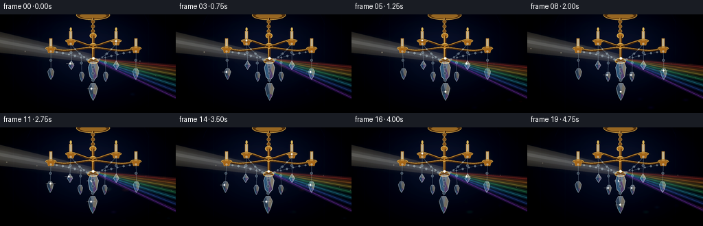
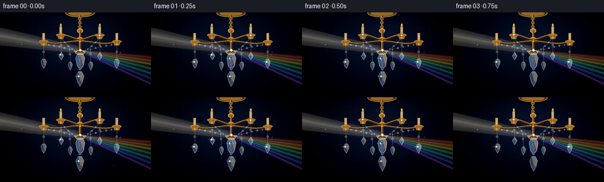

CODING AGENTS AS PIXEL WORLD MODELS
traex/GPT-5.6-Sol · phygen_087
点击播放 · 原生 RGB 像素
逐轮保存的候选
回放视频、检查图与代码变化。
每份候选均可单独播放。实际图片检查记录在下方工具轨迹中。
候选 01播放与检查图
点击播放 · 原生 RGB 像素


展开代码变化
--- 上一保存版本
+++ 本次保存版本
@@ -0,0 +1,299 @@
+from pathlib import Path
+import json, math
+import numpy as np
+from PIL import Image, ImageDraw, ImageFilter
+import artifact_io
+
+ROOT = Path(__file__).resolve().parent
+SPEC = json.loads((ROOT / "task_spec.json").read_text())
+W, H, N, FPS = SPEC["width"], SPEC["height"], SPEC["frames"], SPEC["fps"]
+S = 4
+SW, SH = W*S, H*S
+rng = np.random.default_rng(8701)
+
+# Static dust/texture locations; animation is deterministic.
+DUST = [(float(rng.uniform(-12, 260)), float(rng.uniform(10, 135)),
+ float(rng.uniform(.35, 1.25)), float(rng.uniform(0, 2*math.pi))) for _ in range(95)]
+CAUSTICS = [(float(rng.uniform(151, 254)), float(rng.uniform(72, 140)),
+ float(rng.uniform(1.0, 3.2)), float(rng.uniform(0, 2*math.pi))) for _ in range(30)]
+
+
+def scpts(points):
+ return [(int(round(x*S)), int(round(y*S))) for x, y in points]
+
+def box(x0,y0,x1,y1):
+ return (int(x0*S), int(y0*S), int(x1*S), int(y1*S))
+
+def rgba_layer():
+ return Image.new("RGBA", (SW, SH), (0,0,0,0))
+
+def comp(base, layer):
+ return Image.alpha_composite(base, layer)
+
+def bezier(draw, p0,p1,p2,p3, fill, width):
+ pts=[]
+ for u in np.linspace(0,1,45):
+ q=1-u
+ pts.append((S*(q**3*p0[0]+3*q*q*u*p1[0]+3*q*u*u*p2[0]+u**3*p3[0]),
+ S*(q**3*p0[1]+3*q*q*u*p1[1]+3*q*u*u*p2[1]+u**3*p3[1])))
+ draw.line(pts, fill=fill, width=max(1,int(width*S)), joint="curve")
+
+def glow_line(layer, points, color, width, blur):
+ g=rgba_layer(); d=ImageDraw.Draw(g)
+ d.line(scpts(points), fill=color, width=max(1,int(width*S)), joint="curve")
+ layer.alpha_composite(g.filter(ImageFilter.GaussianBlur(blur*S)))
+
+def star(draw, x,y,r, color=(255,248,224,235), diagonal=True):
+ x*=S; y*=S; r*=S
+ draw.line([(x-r*2.7,y),(x+r*2.7,y)], fill=color, width=max(1,int(.38*S)))
+ draw.line([(x,y-r),(x,y+r)], fill=color, width=max(1,int(.50*S)))
+ if diagonal:
+ c=(color[0],color[1],color[2],max(40,color[3]//2))
+ draw.line([(x-r*.85,y-r*.85),(x+r*.85,y+r*.85)], fill=c, width=max(1,int(.3*S)))
+ draw.line([(x-r*.85,y+r*.85),(x+r*.85,y-r*.85)], fill=c, width=max(1,int(.3*S)))
+ draw.ellipse((x-1.2*S,y-1.2*S,x+1.2*S,y+1.2*S), fill=(255,255,250,245))
+
+def crystal(layer, cx, cy, w, h, phase, kind="drop", bright=1.0):
+ """Draw a translucent, explicitly faceted hanging crystal."""
+ d=ImageDraw.Draw(layer, "RGBA")
+ if kind == "diamond":
+ outer=[(cx,cy-h/2),(cx+w/2,cy),(cx,cy+h/2),(cx-w/2,cy)]
+ top=(cx,cy-h/2); left=(cx-w/2,cy); right=(cx+w/2,cy); bot=(cx,cy+h/2)
+ inner=(cx + math.sin(phase)*w*.06, cy-h*.03)
+ facets=[([top,left,inner],(185,224,255,105)),
+ ([top,right,inner],(255,250,220,125)),
+ ([left,bot,inner],(85,156,211,92)),
+ ([right,bot,inner],(228,183,255,105))]
+ elif kind == "prism":
+ outer=[(cx-w*.29,cy-h/2),(cx+w*.29,cy-h/2),(cx+w/2,cy-h*.20),
+ (cx+w*.34,cy+h*.30),(cx,cy+h/2),(cx-w*.34,cy+h*.30),(cx-w/2,cy-h*.20)]
+ facets=[([outer[0],outer[1],(cx,cy+h/2)],(210,238,255,98)),
+ ([outer[1],outer[2],outer[3],(cx,cy+h/2)],(255,231,184,100)),
+ ([outer[0],(cx,cy+h/2),outer[5],outer[6]],(100,174,221,95)),
+ ([(cx-w*.1,cy-h/2),outer[3],(cx,cy+h/2)],(230,165,255,72))]
+ else:
+ outer=[(cx-w*.23,cy-h/2),(cx+w*.23,cy-h/2),(cx+w/2,cy-h*.22),
+ (cx+w*.30,cy+h*.20),(cx,cy+h/2),(cx-w*.30,cy+h*.20),(cx-w/2,cy-h*.22)]
+ facets=[([outer[0],outer[1],(cx,cy+h*.08)],(226,245,255,110)),
+ ([outer[1],outer[2],outer[3],(cx,cy+h*.08)],(255,238,195,108)),
+ ([outer[3],outer[4],(cx,cy+h*.08)],(220,156,255,85)),
+ ([outer[4],outer[5],(cx,cy+h*.08)],(103,195,242,100)),
+ ([outer[5],outer[6],outer[0],(cx,cy+h*.08)],(135,185,224,74))]
+ # subtle glow behind edges
+ gd=rgba_layer(); gg=ImageDraw.Draw(gd, "RGBA")
+ gg.polygon(scpts(outer), fill=(175,225,255,int(30*bright)))
+ layer.alpha_composite(gd.filter(ImageFilter.GaussianBlur(2.3*S)))
+ d.polygon(scpts(outer), fill=(195,225,238,int(48*bright)), outline=(225,248,255,int(180*bright)))
+ for poly,col in facets:
+ d.polygon(scpts(poly), fill=(col[0],col[1],col[2],int(col[3]*bright)))
+ # edge and inner facet seams
+ d.line(scpts(outer+[outer[0]]), fill=(232,250,255,int(190*bright)), width=max(1,S//2), joint="curve")
+ d.line(scpts([(cx,cy-h*.42),(cx,cy+h*.42)]), fill=(255,255,244,int(58*bright)), width=max(1,S//3))
+ # traveling glint
+ if (math.sin(phase*1.7)+.35*math.sin(phase*3.3)) > .48:
+ star(d, cx-w*.18, cy-h*.18, 1.1+1.2*bright, (255,255,238,220))
+
+
+def make_background():
+ yy,xx=np.mgrid[0:SH,0:SW]
+ nx=xx/(SW-1); ny=yy/(SH-1)
+ # Deep blue-black interior with faint warm wall glow behind chandelier.
+ radial=np.exp(-(((nx-.52)/.42)**2+((ny-.35)/.56)**2)*1.6)
+ top=np.exp(-((ny-.03)/.55)**2)
+ arr=np.empty((SH,SW,4),dtype=np.uint8)
+ arr[...,0]=np.clip(3+12*radial+2*top,0,255)
+ arr[...,1]=np.clip(7+14*radial+3*top,0,255)
+ arr[...,2]=np.clip(16+25*radial+7*top,0,255)
+ # cinematic vignette
+ vig=np.clip(1-.58*((nx-.5)**2/.28+(ny-.48)**2/.38),.36,1)
+ arr[...,:3]=(arr[...,:3]*vig[...,None]).astype(np.uint8)
+ arr[...,3]=255
+ return Image.fromarray(arr,"RGBA")
+
+BACKGROUND=make_background()
+
+
+def render(fi):
+ t=fi/FPS
+ theta=2*math.pi*t/4.8
+ sway=1.45*math.sin(theta)
+ base=BACKGROUND.copy()
+
+ # Dim architectural suggestion in the darkness: vertical wall panels.
+ arch=rgba_layer(); ad=ImageDraw.Draw(arch,"RGBA")
+ for x in (19,55,216,241):
+ ad.line([(x*S,0),(x*S,SH)], fill=(75,89,111,12), width=max(1,S//2))
+ ad.arc(box(37,-40,220,104), 194,346, fill=(91,100,120,11), width=S)
+ base=comp(base,arch)
+
+ # Incoming volumetric white-gold beam, converging on the central prism.
+ beam=rgba_layer(); bd=ImageDraw.Draw(beam,"RGBA")
+ origin=(136+sway*.42,65.0)
+ bd.polygon(scpts([(-18,21),(-18,54),(origin[0]+1,70),(origin[0]-1,58)]), fill=(255,232,183,28))
+ bd.polygon(scpts([(-15,30),(-15,45),(origin[0],68),(origin[0],61)]), fill=(255,246,218,37))
+ bd.polygon(scpts([(-10,35),(-10,40),(origin[0],65.6),(origin[0],63.2)]), fill=(255,252,233,55))
+ soft=beam.filter(ImageFilter.GaussianBlur(5.5*S))
+ base=comp(base,soft); base=comp(base,beam)
+
+ # Refracted rainbow fan. Separate broad glows and sharper cores make it legible.
+ rainbow=rgba_layer(); rd=ImageDraw.Draw(rainbow,"RGBA")
+ bands=[((255,76,56),76.5),((255,150,49),82.5),((255,222,75),89.0),
+ ((80,232,141),97.0),((63,208,240),106.0),((75,124,255),115.5),((184,80,255),126.0)]
+ phase_shift=1.0*math.sin(theta*.72)
+ rainbow_glow=rgba_layer(); rg=ImageDraw.Draw(rainbow_glow,"RGBA")
+ for j,(c,ey) in enumerate(bands):
+ endy=ey+phase_shift + .6*math.sin(theta+j*.45)
+ # tapered wedge from prism to far right
+ pts=[(origin[0]+1,63.5+j*.32),(268,endy-2.2),(268,endy+3.1),(origin[0]+2,67+j*.30)]
+ rg.polygon(scpts(pts), fill=(*c,34))
+ core=[(origin[0]+3,65+j*.23),(267,endy+.4)]
+ rd.line(scpts(core), fill=(*c,74), width=max(1,int(1.05*S)))
+ base=comp(base,rainbow_glow.filter(ImageFilter.GaussianBlur(4.0*S)))
+ base=comp(base,rainbow_glow)
+ base=comp(base,rainbow)
+
+ # Chandelier metal structure.
+ metal=rgba_layer(); md=ImageDraw.Draw(metal,"RGBA")
+ # canopy and chain
+ md.ellipse(box(111,-6,160,8), fill=(79,48,17,255), outline=(221,169,72,220), width=S)
+ md.ellipse(box(116,-2,155,6), fill=(170,116,39,210))
+ md.line(scpts([(135.5,5),(135.5+sway*.08,29)]), fill=(64,39,19,255), width=3*S)
+ md.line(scpts([(134.7,5),(134.7+sway*.08,29)]), fill=(235,183,83,225), width=S)
+ for y in (10,17,24):
+ md.ellipse(box(132.5,y-2,138,y+3), fill=(123,77,27,255), outline=(244,199,99,190), width=max(1,S//2))
+ cx=135.5+sway*.22
+ # central stem ornaments
+ md.ellipse(box(cx-5,27,cx+5,35), fill=(172,112,35,255), outline=(245,202,103,220), width=S)
+ md.line(scpts([(cx,31),(cx,69)]), fill=(99,59,23,255), width=4*S)
+ md.line(scpts([(cx-.7,31),(cx-.7,69)]), fill=(238,184,77,230), width=S)
+ md.ellipse(box(cx-6,42,cx+6,50), fill=(183,119,35,255), outline=(249,205,103,220), width=S)
+ md.ellipse(box(cx-8,64,cx+8,72), fill=(113,69,24,255), outline=(239,187,81,220), width=S)
+ # scrolling arms behind crystals
+ arm_specs=[(cx-1,45,cx-25,40,103,44),(cx+1,45,cx+25,40,168,44),
+ (cx-2,49,cx-37,55,74,52),(cx+2,49,cx+37,55,198,52)]
+ # custom endpoint curves
+ curves=[((cx-1,46),(123,45),(115,38),(103,38)),
+ ((cx+1,46),(148,45),(157,38),(169,38)),
+ ((cx-2,49),(112,49),(95,58),(74,49)),
+ ((cx+2,49),(158,49),(177,58),(198,49))]
+ for p0,p1,p2,p3 in curves:
+ bezier(md,p0,p1,p2,p3,(67,41,19,255),3.4)
+ bezier(md,(p0[0],p0[1]-.7),(p1[0],p1[1]-.7),(p2[0],p2[1]-.7),(p3[0],p3[1]-.7),(224,165,65,220),1.05)
+ # candle cups, stems and warm bulbs at four arm tips
+ for k,(x,y) in enumerate([(74,49),(103,38),(169,38),(198,49)]):
+ md.ellipse(box(x-8,y-2,x+8,y+3), fill=(98,57,20,255), outline=(229,174,70,220), width=S)
+ md.polygon(scpts([(x-6,y),(x+6,y),(x+4,y+7),(x-4,y+7)]), fill=(160,100,29,255), outline=(239,188,82,215))
+ md.rectangle(box(x-2.1,y-14,x+2.1,y), fill=(183,132,57,255))
+ # unlit but reflective ivory sleeves
+ md.rectangle(box(x-1.45,y-13,x+1.45,y-3), fill=(220,202,161,210))
+ flame_y=y-16.0
+ if k in (1,2):
+ md.ellipse(box(x-1.5,flame_y-3,x+1.5,flame_y+2), fill=(255,211,101,205))
+ # gold bloom
+ mg=metal.filter(ImageFilter.GaussianBlur(2.2*S)); mg.putalpha(mg.getchannel('A').point(lambda a:a//5))
+ base=comp(base,mg); base=comp(base,metal)
+
+ # Crystal garlands: hanging bead chains draped in shallow arcs.
+ gems=rgba_layer(); gd=ImageDraw.Draw(gems,"RGBA")
+ chains=[((74,54),(cx,69),-2),((103,43),(cx,69),4),((169,43),(cx,69),4),((198,54),(cx,69),-2)]
+ for ci,(p0,p1,bow) in enumerate(chains):
+ steps=8 if abs(p0[0]-p1[0])>45 else 6
+ pts=[]
+ for q in np.linspace(0,1,steps):
+ x=(1-q)*p0[0]+q*p1[0]
+ y=(1-q)*p0[1]+q*p1[1]+bow*4*q*(1-q)
+ x += sway*q*.18
+ pts.append((x,y))
+ gd.line(scpts(pts), fill=(164,206,225,115), width=max(1,S//2))
+ for bi,(x,y) in enumerate(pts[:-1]):
+ rr=1.45 if bi%2==0 else 1.1
+ gd.ellipse(box(x-rr,y-rr,x+rr,y+rr), fill=(201,236,250,85), outline=(245,255,255,180), width=max(1,S//3))
+ gd.line(scpts([(x-rr*.65,y),(x+rr*.65,y)]), fill=(255,250,220,145), width=max(1,S//3))
+
+ # vertical crystal strings and pendants
+ pendants=[(74,55,87,9,16,"drop"),(103,44,74,8,13,"diamond"),
+ (118,58,91,7,14,"drop"),(153,57,91,7,14,"drop"),
+ (169,44,74,8,13,"diamond"),(198,55,87,9,16,"drop")]
+ for j,(x,ys,cy,w,h,kind) in enumerate(pendants):
+ local_sway=sway*(.45+.08*(j%3))+1.0*math.sin(theta*(1.05+.025*j)+j*.7)
+ px=x+local_sway
+ gd.line(scpts([(x+sway*.1,ys),(px,cy-h/2)]), fill=(195,226,239,112), width=max(1,S//2))
+ # tiny octagonal bead midway
+ my=(ys+cy-h/2)/2; mx=(x+sway*.1+px)/2
+ gd.ellipse(box(mx-1.8,my-1.8,mx+1.8,my+1.8), fill=(187,230,248,72), outline=(248,255,255,178), width=max(1,S//3))
+ crystal(gems,px,cy,w,h,theta+j*.73,kind,.90)
+
+ # focal center prism, positioned exactly where the light passes.
+ focal_x=origin[0]
+ gd.line(scpts([(cx,69),(focal_x,73)]), fill=(223,239,245,150), width=max(1,S//2))
+ gd.ellipse(box(focal_x-2.1,69,focal_x+2.1,73), fill=(213,239,250,120), outline=(255,255,245,210), width=max(1,S//3))
+ crystal(gems,focal_x,83,15,27,theta*1.35,"prism",1.18)
+ # grand bottom finial and drop
+ lowerx=cx+sway*.70
+ gd.line(scpts([(cx,70),(lowerx,104)]), fill=(185,221,237,112), width=max(1,S//2))
+ for y in (77,86,96):
+ x=cx+sway*(y-70)/40*.7
+ gd.ellipse(box(x-2.1,y-2.2,x+2.1,y+2.2), fill=(187,226,243,78), outline=(248,255,255,180), width=max(1,S//3))
+ crystal(gems,lowerx,113,13,25,theta+.4,"drop",1.0)
+
+ base=comp(base,gems)
+
+ # Intense contact flash where beam enters focal crystal.
+ flash=rgba_layer(); fd=ImageDraw.Draw(flash,"RGBA")
+ pulse=.82+.18*math.sin(theta*2.4)
+ fd.ellipse(box(origin[0]-2.0,62.2,origin[0]+2.0,66.2), fill=(255,255,238,int(235*pulse)))
+ star(fd,origin[0],64.3,2.8*pulse,(255,252,225,int(238*pulse)))
+ blurred=flash.filter(ImageFilter.GaussianBlur(4*S))
+ base=comp(base,blurred); base=comp(base,flash)
+
+ # Floating illuminated dust, visible primarily in the incident and outgoing beams.
+ particles=rgba_layer(); pd=ImageDraw.Draw(particles,"RGBA")
+ for k,(x0,y0,r,p) in enumerate(DUST):
+ x=(x0 + t*(2.0+1.4*(k%4)))%282-13
+ y=y0 + 1.3*math.sin(theta*.68+p)
+ # membership in incident cone or refracted fan
+ incident=(x<origin[0] and (31+.185*(x+10) < y < 48+.14*(x+10)))
+ outgoing=(x>origin[0] and (64+.05*(x-origin[0]) < y < 70+.25*(x-origin[0])))
+ if incident or outgoing:
+ a=int(45+65*(.5+.5*math.sin(theta*1.3+p)))
+ rr=r*(1.0 if k%5 else 1.6)
+ pd.ellipse(box(x-rr,y-rr,x+rr,y+rr),fill=(255,242,210,a))
+ base=comp(base,particles.filter(ImageFilter.GaussianBlur(.4*S)))
+
+ # Colored caustic flecks on the lower-right darkness.
+ ca=rgba_layer(); cd=ImageDraw.Draw(ca,"RGBA")
+ palette=[(255,91,74),(255,190,72),(76,218,181),(80,157,255),(189,93,255)]
+ for k,(x,y,r,p) in enumerate(CAUSTICS):
+ pulse=max(0,math.sin(theta*(.76+(k%3)*.09)+p))
+ if pulse>.34:
+ dx=2.5*math.sin(theta*.35+p)
+ col=palette[k%len(palette)]
+ rr=r*(.35+.65*pulse)
+ cd.ellipse(box(x+dx-rr*2.1,y-rr*.45,x+dx+rr*2.1,y+rr*.45), fill=(*col,int(25+50*pulse)))
+ base=comp(base,ca.filter(ImageFilter.GaussianBlur(2*S)))
+
+ # Final controlled glints on selected facets/cups.
+ fg=rgba_layer(); fgd=ImageDraw.Draw(fg,"RGBA")
+ glints=[(103,38,0.0),(169,39,1.4),(74+sway*.5,82,2.6),(198+sway*.5,82,4.1),(lowerx,113,5.0)]
+ for k,(x,y,p) in enumerate(glints):
+ q=max(0,math.sin(theta*1.45+p))
+ if q>.55:
+ star(fgd,x,y,(q-.45)*4.6,(255,252,228,int(130+110*q)),k%2==0)
+ base=comp(base,fg.filter(ImageFilter.GaussianBlur(1.2*S))); base=comp(base,fg)
+
+ # Downsample for clean subpixel facets and modest filmic contrast.
+ rgb=base.convert("RGB").resize((W,H),Image.Resampling.LANCZOS)
+ a=np.asarray(rgb).astype(np.float32)/255.0
+ # gentle S-curve and protect luminous colors
+ a=np.clip((a-.5)*1.07+.5,0,1)
+ a=np.power(a,0.96)
+ return (a*255+.5).astype(np.uint8)
+
+
+def main():
+ frames=np.stack([render(i) for i in range(N)],axis=0)
+ artifact_io.save(frames, ROOT)
+ print(f"saved {frames.shape} RGB frames at {FPS} fps")
+
+if __name__ == "__main__":
+ main()
可观测工具轨迹
实际执行的命令与返回图片。
命令 1exit 0
/bin/bash -lc "ls -la && printf '\\n--- prompt.txt ---\\n' && cat prompt.txt && printf '\\n--- GENERATION_RULES.md ---\\n' && cat GENERATION_RULES.md && printf '\\n--- task_spec.json ---\\n' && cat task_spec.json"
命令 2exit 0
/bin/bash -lc "find . -maxdepth 2 -type f -printf '%p %s bytes\\n' | sort"
命令 3exit 0
/bin/bash -lc "sed -n '1,240p' artifact_io.py"
命令 4exit 0
/bin/bash -lc "python - <<'PY'
import PIL,numpy
print('PIL',PIL.__version__,'numpy',numpy.__version__)
try:
import cv2; print('cv2',cv2.__version__)
except Exception as e: print('no cv2',e)
PY
ffmpeg -version | head -2"命令 5exit 0
/bin/bash -lc "cat > generate.py <<'PY'
from pathlib import Path
import json, math
import numpy as np
from PIL import Image, ImageDraw, ImageFilter
import artifact_io
ROOT = Path(__file__).resolve().parent
SPEC = json.loads((ROOT / \"task_spec.json\").read_text())
W, H, N, FPS = SPEC[\"width\"], SPEC[\"height\"], SPEC[\"frames\"], SPEC[\"fps\"]
S = 4
SW, SH = W*S, H*S
rng = np.random.default_rng(8701)
# Static dust/texture locations; animation is deterministic.
DUST = [(float(rng.uniform(-12, 260)), float(rng.uniform(10, 135)),
float(rng.uniform(.35, 1.25)), float(rng.uniform(0, 2*math.pi))) for _ in range(95)]
CAUSTICS = [(float(rng.uniform(151, 254)), float(rng.uniform(72, 140)),
float(rng.uniform(1.0, 3.2)), float(rng.uniform(0, 2*math.pi))) for _ in range(30)]
def scpts(points):
return [(int(round(x*S)), int(round(y*S))) for x, y in points]
def box(x0,y0,x1,y1):
return (int(x0*S), int(y0*S), int(x1*S), int(y1*S))
def rgba_layer():
return Image.new(\"RGBA\", (SW, SH), (0,0,0,0))
def comp(base, layer):
return Image.alpha_composite(base, layer)
def bezier(draw, p0,p1,p2,p3, fill, width):
pts=[]
for u in np.linspace(0,1,45):
q=1-u
pts.append((S*(q**3*p0[0]+3*q*q*u*p1[0]+3*q*u*u*p2[0]+u**3*p3[0]),
S*(q**3*p0[1]+3*q*q*u*p1[1]+3*q*u*u*p2[1]+u**3*p3[1])))
draw.line(pts, fill=fill, width=max(1,int(width*S)), joint=\"curve\")
def glow_line(layer, points, color, width, blur):
g=rgba_layer(); d=ImageDraw.Draw(g)
d.line(scpts(points), fill=color, width=max(1,int(width*S)), joint=\"curve\")
layer.alpha_composite(g.filter(ImageFilter.GaussianBlur(blur*S)))
def star(draw, x,y,r, color=(255,248,224,235), diagonal=True):
x*=S; y*=S; r*=S
draw.line([(x-r*2.7,y),(x+r*2.7,y)], fill=color, width=max(1,int(.38*S)))
draw.line([(x,y-r),(x,y+r)], fill=color, width=max(1,int(.50*S)))
if diagonal:
c=(color[0],color[1],color[2],max(40,color[3]//2))
draw.line([(x-r*.85,y-r*.85),(x+r*.85,y+r*.85)], fill=c, width=max(1,int(.3*S)))
draw.line([(x-r*.85,y+r*.85),(x+r*.85,y-r*.85)], fill=c, width=max(1,int(.3*S)))
draw.ellipse((x-1.2*S,y-1.2*S,x+1.2*S,y+1.2*S), fill=(255,255,250,245))
def crystal(layer, cx, cy, w, h, phase, kind=\"drop\", bright=1.0):
\"\"\"Draw a translucent, explicitly faceted hanging crystal.\"\"\"
d=ImageDraw.Draw(layer, \"RGBA\")
if kind == \"diamond\":
outer=[(cx,cy-h/2),(cx+w/2,cy),(cx,cy+h/2),(cx-w/2,cy)]
top=(cx,cy-h/2); left=(cx-w/2,cy); right=(cx+w/2,cy); bot=(cx,cy+h/2)
inner=(cx + math.sin(phase)*w*.06, cy-h*.03)
facets=[([top,left,inner],(185,224,255,105)),
([top,right,inner],(255,250,220,125)),
([left,bot,inner],(85,156,211,92)),
([right,bot,inner],(228,183,255,105))]
elif kind == \"prism\":
outer=[(cx-w*.29,cy-h/2),(cx+w*.29,cy-h/2),(cx+w/2,cy-h*.20),
(cx+w*.34,cy+h*.30),(cx,cy+h/2),(cx-w*.34,cy+h*.30),(cx-w/2,cy-h*.20)]
facets=[([outer[0],outer[1],(cx,cy+h/2)],(210,238,255,98)),
([outer[1],outer[2],outer[3],(cx,cy+h/2)],(255,231,184,100)),
([outer[0],(cx,cy+h/2),outer[5],outer[6]],(100,174,221,95)),
([(cx-w*.1,cy-h/2),outer[3],(cx,cy+h/2)],(230,165,255,72))]
else:
outer=[(cx-w*.23,cy-h/2),(cx+w*.23,cy-h/2),(cx+w/2,cy-h*.22),
(cx+w*.30,cy+h*.20),(cx,cy+h/2),(cx-w*.30,cy+h*.20),(cx-w/2,cy-h*.22)]
facets=[([outer[0],outer[1],(cx,cy+h*.08)],(226,245,255,110)),
([outer[1],outer[2],outer[3],(cx,cy+h*.08)],(255,238,195,108)),
([outer[3],outer[4],(cx,cy+h*.08)],(220,156,255,85)),
([outer[4],outer[5],(cx,cy+h*.08)],(103,195,242,100)),
([outer[5],outer[6],outer[0],(cx,cy+h*.08)],(135,185,224,74))]
# subtle glow behind edges
gd=rgba_layer(); gg=ImageDraw.Draw(gd, \"RGBA\")
gg.polygon(scpts(outer), fill=(175,225,255,int(30*bright)))
layer.alpha_composite(gd.filter(ImageFilter.GaussianBlur(2.3*S)))
d.polygon(scpts(outer), fill=(195,225,238,int(48*bright)), outline=(225,248,255,int(180*bright)))
for poly,col in facets:
d.polygon(scpts(poly), fill=(col[0],col[1],col[2],int(col[3]*bright)))
# edge and inner facet seams
d.line(scpts(outer+[outer[0]]), fill=(232,250,255,int(190*bright)), width=max(1,S//2), joint=\"curve\")
d.line(scpts([(cx,cy-h*.42),(cx,cy+h*.42)]), fill=(255,255,244,int(58*bright)), width=max(1,S//3))
# traveling glint
if (math.sin(phase*1.7)+.35*math.sin(phase*3.3)) > .48:
star(d, cx-w*.18, cy-h*.18, 1.1+1.2*bright, (255,255,238,220))
def make_background():
yy,xx=np.mgrid[0:SH,0:SW]
nx=xx/(SW-1); ny=yy/(SH-1)
# Deep blue-black interior with faint warm wall glow behind chandelier.
radial=np.exp(-(((nx-.52)/.42)**2+((ny-.35)/.56)**2)*1.6)
top=np.exp(-((ny-.03)/.55)**2)
arr=np.empty((SH,SW,4),dtype=np.uint8)
arr[...,0]=np.clip(3+12*radial+2*top,0,255)
arr[...,1]=np.clip(7+14*radial+3*top,0,255)
arr[...,2]=np.clip(16+25*radial+7*top,0,255)
# cinematic vignette
vig=np.clip(1-.58*((nx-.5)**2/.28+(ny-.48)**2/.38),.36,1)
arr[...,:3]=(arr[...,:3]*vig[...,None]).astype(np.uint8)
arr[...,3]=255
return Image.fromarray(arr,\"RGBA\")
BACKGROUND=make_background()
def render(fi):
t=fi/FPS
theta=2*math.pi*t/4.8
sway=1.45*math.sin(theta)
base=BACKGROUND.copy()
# Dim architectural suggestion in the darkness: vertical wall panels.
arch=rgba_layer(); ad=ImageDraw.Draw(arch,\"RGBA\")
for x in (19,55,216,241):
ad.line([(x*S,0),(x*S,SH)], fill=(75,89,111,12), width=max(1,S//2))
ad.arc(box(37,-40,220,104), 194,346, fill=(91,100,120,11), width=S)
base=comp(base,arch)
# Incoming volumetric white-gold beam, converging on the central prism.
beam=rgba_layer(); bd=ImageDraw.Draw(beam,\"RGBA\")
origin=(136+sway*.42,65.0)
bd.polygon(scpts([(-18,21),(-18,54),(origin[0]+1,70),(origin[0]-1,58)]), fill=(255,232,183,28))
bd.polygon(scpts([(-15,30),(-15,45),(origin[0],68),(origin[0],61)]), fill=(255,246,218,37))
bd.polygon(scpts([(-10,35),(-10,40),(origin[0],65.6),(origin[0],63.2)]), fill=(255,252,233,55))
soft=beam.filter(ImageFilter.GaussianBlur(5.5*S))
base=comp(base,soft); base=comp(base,beam)
# Refracted rainbow fan. Separate broad glows and sharper cores make it legible.
rainbow=rgba_layer(); rd=ImageDraw.Draw(rainbow,\"RGBA\")
bands=[((255,76,56),76.5),((255,150,49),82.5),((255,222,75),89.0),
((80,232,141),97.0),((63,208,240),106.0),((75,124,255),115.5),((184,80,255),126.0)]
phase_shift=1.0*math.sin(theta*.72)
rainbow_glow=rgba_layer(); rg=ImageDraw.Draw(rainbow_glow,\"RGBA\")
for j,(c,ey) in enumerate(bands):
endy=ey+phase_shift + .6*math.sin(theta+j*.45)
# tapered wedge from prism to far right
pts=[(origin[0]+1,63.5+j*.32),(268,endy-2.2),(268,endy+3.1),(origin[0]+2,67+j*.30)]
rg.polygon(scpts(pts), fill=(*c,34))
core=[(origin[0]+3,65+j*.23),(267,endy+.4)]
rd.line(scpts(core), fill=(*c,74), width=max(1,int(1.05*S)))
base=comp(base,rainbow_glow.filter(ImageFilter.GaussianBlur(4.0*S)))
base=comp(base,rainbow_glow)
base=comp(base,rainbow)
# Chandelier metal structure.
metal=rgba_layer(); md=ImageDraw.Draw(metal,\"RGBA\")
# canopy and chain
md.ellipse(box(111,-6,160,8), fill=(79,48,17,255), outline=(221,169,72,220), width=S)
md.ellipse(box(116,-2,155,6), fill=(170,116,39,210))
md.line(scpts([(135.5,5),(135.5+sway*.08,29)]), fill=(64,39,19,255), width=3*S)
md.line(scpts([(134.7,5),(134.7+sway*.08,29)]), fill=(235,183,83,225), width=S)
for y in (10,17,24):
md.ellipse(box(132.5,y-2,138,y+3), fill=(123,77,27,255), outline=(244,199,99,190), width=max(1,S//2))
cx=135.5+sway*.22
# central stem ornaments
md.ellipse(box(cx-5,27,cx+5,35), fill=(172,112,35,255), outline=(245,202,103,220), width=S)
md.line(scpts([(cx,31),(cx,69)]), fill=(99,59,23,255), width=4*S)
md.line(scpts([(cx-.7,31),(cx-.7,69)]), fill=(238,184,77,230), width=S)
md.ellipse(box(cx-6,42,cx+6,50), fill=(183,119,35,255), outline=(249,205,103,220), width=S)
md.ellipse(box(cx-8,64,cx+8,72), fill=(113,69,24,255), outline=(239,187,81,220), width=S)
# scrolling arms behind crystals
arm_specs=[(cx-1,45,cx-25,40,103,44),(cx+1,45,cx+25,40,168,44),
(cx-2,49,cx-37,55,74,52),(cx+2,49,cx+37,55,198,52)]
# custom endpoint curves
curves=[((cx-1,46),(123,45),(115,38),(103,38)),
((cx+1,46),(148,45),(157,38),(169,38)),
((cx-2,49),(112,49),(95,58),(74,49)),
((cx+2,49),(158,49),(177,58),(198,49))]
for p0,p1,p2,p3 in curves:
bezier(md,p0,p1,p2,p3,(67,41,19,255),3.4)
bezier(md,(p0[0],p0[1]-.7),(p1[0],p1[1]-.7),(p2[0],p2[1]-.7),(p3[0],p3[1]-.7),(224,165,65,220),1.05)
# candle cups, stems and warm bulbs at four arm tips
for k,(x,y) in enumerate([(74,49),(103,38),(169,38),(198,49)]):
md.ellipse(box(x-8,y-2,x+8,y+3), fill=(98,57,20,255), outline=(229,174,70,220), width=S)
md.polygon(scpts([(x-6,y),(x+6,y),(x+4,y+7),(x-4,y+7)]), fill=(160,100,29,255), outline=(239,188,82,215))
md.rectangle(box(x-2.1,y-14,x+2.1,y), fill=(183,132,57,255))
# unlit but reflective ivory sleeves
md.rectangle(box(x-1.45,y-13,x+1.45,y-3), fill=(220,202,161,210))
flame_y=y-16.0
if k in (1,2):
md.ellipse(box(x-1.5,flame_y-3,x+1.5,flame_y+2), fill=(255,211,101,205))
# gold bloom
mg=metal.filter(ImageFilter.GaussianBlur(2.2*S)); mg.putalpha(mg.getchannel('A').point(lambda a:a//5))
base=comp(base,mg); base=comp(base,metal)
# Crystal garlands: hanging bead chains draped in shallow arcs.
gems=rgba_layer(); gd=ImageDraw.Draw(gems,\"RGBA\")
chains=[((74,54),(cx,69),-2),((103,43),(cx,69),4),((169,43),(cx,69),4),((198,54),(cx,69),-2)]
for ci,(p0,p1,bow) in enumerate(chains):
steps=8 if abs(p0[0]-p1[0])>45 else 6
pts=[]
for q in np.linspace(0,1,steps):
x=(1-q)*p0[0]+q*p1[0]
y=(1-q)*p0[1]+q*p1[1]+bow*4*q*(1-q)
x += sway*q*.18
pts.append((x,y))
gd.line(scpts(pts), fill=(164,206,225,115), width=max(1,S//2))
for bi,(x,y) in enumerate(pts[:-1]):
rr=1.45 if bi%2==0 else 1.1
gd.ellipse(box(x-rr,y-rr,x+rr,y+rr), fill=(201,236,250,85), outline=(245,255,255,180), width=max(1,S//3))
gd.line(scpts([(x-rr*.65,y),(x+rr*.65,y)]), fill=(255,250,220,145), width=max(1,S//3))
# vertical crystal strings and pendants
pendants=[(74,55,87,9,16,\"drop\"),(103,44,74,8,13,\"diamond\"),
(118,58,91,7,14,\"drop\"),(153,57,91,7,14,\"drop\"),
(169,44,74,8,13,\"diamond\"),(198,55,87,9,16,\"drop\")]
for j,(x,ys,cy,w,h,kind) in enumerate(pendants):
local_sway=sway*(.45+.08*(j%3))+1.0*math.sin(theta*(1.05+.025*j)+j*.7)
px=x+local_sway
gd.line(scpts([(x+sway*.1,ys),(px,cy-h/2)]), fill=(195,226,239,112), width=max(1,S//2))
# tiny octagonal bead midway
my=(ys+cy-h/2)/2; mx=(x+sway*.1+px)/2
gd.ellipse(box(mx-1.8,my-1.8,mx+1.8,my+1.8), fill=(187,230,248,72), outline=(248,255,255,178), width=max(1,S//3))
crystal(gems,px,cy,w,h,theta+j*.73,kind,.90)
# focal center prism, positioned exactly where the light passes.
focal_x=origin[0]
gd.line(scpts([(cx,69),(focal_x,73)]), fill=(223,239,245,150), width=max(1,S//2))
gd.ellipse(box(focal_x-2.1,69,focal_x+2.1,73), fill=(213,239,250,120), outline=(255,255,245,210), width=max(1,S//3))
crystal(gems,focal_x,83,15,27,theta*1.35,\"prism\",1.18)
# grand bottom finial and drop
lowerx=cx+sway*.70
gd.line(scpts([(cx,70),(lowerx,104)]), fill=(185,221,237,112), width=max(1,S//2))
for y in (77,86,96):
x=cx+sway*(y-70)/40*.7
gd.ellipse(box(x-2.1,y-2.2,x+2.1,y+2.2), fill=(187,226,243,78), outline=(248,255,255,180), width=max(1,S//3))
crystal(gems,lowerx,113,13,25,theta+.4,\"drop\",1.0)
base=comp(base,gems)
# Intense contact flash where beam enters focal crystal.
flash=rgba_layer(); fd=ImageDraw.Draw(flash,\"RGBA\")
pulse=.82+.18*math.sin(theta*2.4)
fd.ellipse(box(origin[0]-2.0,62.2,origin[0]+2.0,66.2), fill=(255,255,238,int(235*pulse)))
star(fd,origin[0],64.3,2.8*pulse,(255,252,225,int(238*pulse)))
blurred=flash.filter(ImageFilter.GaussianBlur(4*S))
base=comp(base,blurred); base=comp(base,flash)
# Floating illuminated dust, visible primarily in the incident and outgoing beams.
particles=rgba_layer(); pd=ImageDraw.Draw(particles,\"RGBA\")
for k,(x0,y0,r,p) in enumerate(DUST):
x=(x0 + t*(2.0+1.4*(k%4)))%282-13
y=y0 + 1.3*math.sin(theta*.68+p)
# membership in incident cone or refracted fan
incident=(x<origin[0] and (31+.185*(x+10) < y < 48+.14*(x+10)))
outgoing=(x>origin[0] and (64+.05*(x-origin[0]) < y < 70+.25*(x-origin[0])))
if incident or outgoing:
a=int(45+65*(.5+.5*math.sin(theta*1.3+p)))
rr=r*(1.0 if k%5 else 1.6)
pd.ellipse(box(x-rr,y-rr,x+rr,y+rr),fill=(255,242,210,a))
base=comp(base,particles.filter(ImageFilter.GaussianBlur(.4*S)))
# Colored caustic flecks on the lower-right darkness.
ca=rgba_layer(); cd=ImageDraw.Draw(ca,\"RGBA\")
palette=[(255,91,74),(255,190,72),(76,218,181),(80,157,255),(189,93,255)]
for k,(x,y,r,p) in enumerate(CAUSTICS):
pulse=max(0,math.sin(theta*(.76+(k%3)*.09)+p))
if pulse>.34:
dx=2.5*math.sin(theta*.35+p)
col=palette[k%len(palette)]
rr=r*(.35+.65*pulse)
cd.ellipse(box(x+dx-rr*2.1,y-rr*.45,x+dx+rr*2.1,y+rr*.45), fill=(*col,int(25+50*pulse)))
base=comp(base,ca.filter(ImageFilter.GaussianBlur(2*S)))
# Final controlled glints on selected facets/cups.
fg=rgba_layer(); fgd=ImageDraw.Draw(fg,\"RGBA\")
glints=[(103,38,0.0),(169,39,1.4),(74+sway*.5,82,2.6),(198+sway*.5,82,4.1),(lowerx,113,5.0)]
for k,(x,y,p) in enumerate(glints):
q=max(0,math.sin(theta*1.45+p))
if q>.55:
star(fgd,x,y,(q-.45)*4.6,(255,252,228,int(130+110*q)),k%2==0)
base=comp(base,fg.filter(ImageFilter.GaussianBlur(1.2*S))); base=comp(base,fg)
# Downsample for clean subpixel facets and modest filmic contrast.
rgb=base.convert(\"RGB\").resize((W,H),Image.Resampling.LANCZOS)
a=np.asarray(rgb).astype(np.float32)/255.0
# gentle S-curve and protect luminous colors
a=np.clip((a-.5)*1.07+.5,0,1)
a=np.power(a,0.96)
return (a*255+.5).astype(np.uint8)
def main():
frames=np.stack([render(i) for i in range(N)],axis=0)
artifact_io.save(frames, ROOT)
print(f\"saved {frames.shape} RGB frames at {FPS} fps\")
if __name__ == \"__main__\":
main()
PY
python generate.py"命令 6exit 0
/bin/bash -lc "python - <<'PY'
from PIL import Image
import numpy as np, os
f=np.stack([np.asarray(Image.open(f'frames/{i:02d}.png')) for i in range(20)])
print('shape dtype min max mean:',f.shape,f.dtype,f.min(),f.max(),f.mean())
print('temporal abs diff mean:',np.abs(np.diff(f.astype(float),axis=0)).mean(axis=(1,2,3)).round(3))
print('artifacts:')
for p in ['pixels.npz','index.html','inspection.png','transition_check.png']:
print(p,os.path.getsize(p))
PY"视觉工具实际返回图片 1

保存候选 1 份；完成命令 6 次；可验证图片返回 1 张。原始 API 响应与完整日志保留在本地。